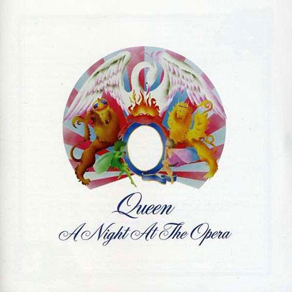
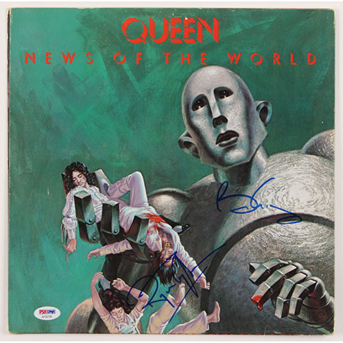
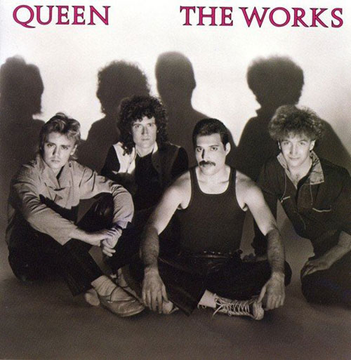
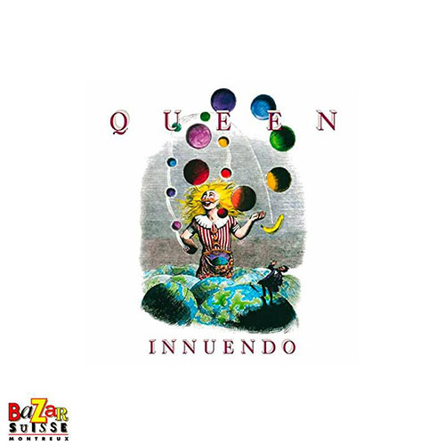

Link zur
Indexseite
A Night At The Opera

Death on Two Legs (Dedicated to…) (Mercury) – 3:43
Lazing on a Sunday Afternoon (Mercury) – 1:07
I’m in Love with My Car (Taylor) – 3:05
You’re My Best Friend (Deacon) – 2:52
’39 (May) – 3:31
Sweet Lady (May) – 4:04
Seaside Rendezvous (Mercury) – 2:16
The Prophet’s Song (May) – 8:21
Love of My Life (Mercury) – 3:39
Good Company (May) – 3:23
Bohemian Rhapsody (Mercury) – 5:55
God Save the Queen (Arr. May) – 1:15
News Of The World

We Will Rock You (May) – 2:01
We Are the Champions (Mercury) – 3:00
Sheer Heart Attack (Taylor) – 3:24
All Dead, All Dead (May) – 3:10
Spread Your Wings (Deacon) – 4:36
Fight from the Inside (Taylor) – 3:02
Get Down, Make Love (Mercury) – 3:51
Sleeping on the Sidewalk (May) – 3:05
Who Needs You (Deacon) – 3:07
It’s Late (May) – 6:26
My Melancholy Blues (Mercury) – 3:33
The Works

Radio Ga Ga (Taylor)
Tear It Up (May)
It’s a Hard Life (Mercury)
Man on the Prowl (Mercury)
Machines (or ‘Back to Humans’) (May/Taylor)
I Want to Break Free (Deacon)
Keep Passing the Open Windows (Mercury)
Hammer to Fall (May)
Is This the World We Created…? (Mercury/May)
Innuendo

Innuendo [Mercury/Taylor] – 6:31
I’m Going Slightly Mad [Mercury] – 4:22
Headlong [May] – 4:38
I Can’t Live with You [May] – 4:33
Don’t Try So Hard [Mercury] – 3:39
Ride the Wild Wind [Taylor] – 4:42
All God’s People [Mercury/Moran] – 4:21
These Are the Days of Our Lives [Taylor] – 4:15
Delilah [Mercury] – 3:35
The Hitman [May/Mercury] – 4:56
Bijou [May/Mercury] – 3:36
The Show Must Go On [Deacon/May/Mercury/Taylor] – 4:35